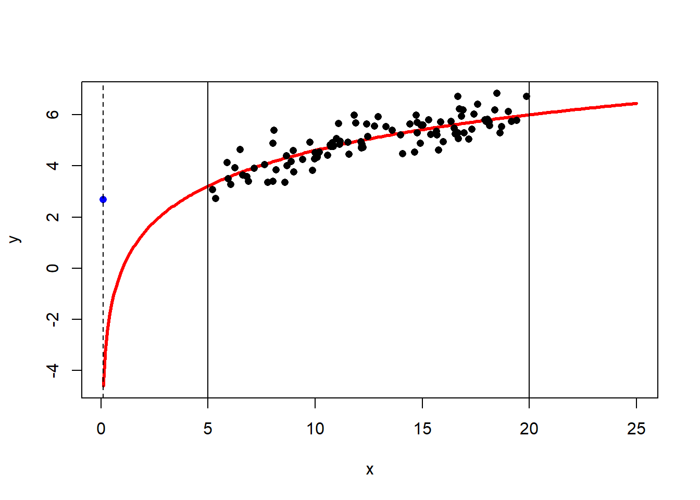
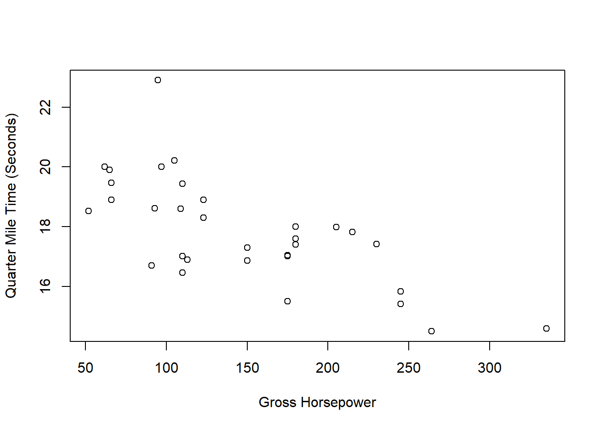

Module 3 Regression and Correlation
In this module, we will extend our conversation on descriptive measures for quantitative variables to include the relationship between two variables.
Module Learning Outcomes/Objectives
- Interpret a correlation coefficient.
- Calculate and interpret a regression line.
- Interpret a coefficient of determination.
- Understand the relationship between a correlation coefficient and a coefficient of determination.
- Use a regression line to make predictions.
3.1 Linear Equations
From your previous math classes, you should have a passing familiarity with linear equations like \(y=mx+b\). In statistics, we write these as \[y=b_0 + b_1x\] where \(b_0\) and \(b_1\) are constants, \(x\) is the independent variable, and \(y\) is the dependent variable. The graph of a linear function is always a (straight) line.
The y-intercept is \(b_0\), the value the dependent variable takes when the independent variable \(x=0\). The slope is \(b_1\), the change in \(y\) for a one-unit increase in \(x\).
3.1.1 Scatter Plots
A scatter plot shows the relationship between two (numeric) variables.

This is just a bunch of points of the form \((x,y)\) plotted in the \(xy\)-plane, where instead of showing the full x- and y-axes, we crop the plot to show only the part where we have data.
At a glance, we can see that (in general) heavier cars have lower MPG. We call this type of data bivariate data (“bi” as in “two” and “variate” as in “variable”).
Now consider a person who spends $15 each month buying a bag of coffee for their home coffee machine. Each coffee they purchase costs $4.25. If we know the numbers of coffees they bought last month, we know exactly how much money they spent!
This relationship can be modeled perfectly with a straight line: \(y = 15 + 4.25x\). The y-intercept tells us that, in a month when this person buys zero coffees (\(x=0\)), they spend \(\$15\). The slope tells us that, for each additional coffee purchased, the amount of money spent in that month goes up by \(\$4.25\)
When we can do this – model a relationship perfectly – we know the exact value of \(y\) whenever we know the value of \(x\). This is nice (we would love to be able to do this all the time!) but typically real-world data is much more complex than this.
3.1.2 Linear Regression
Linear regression takes the idea of fitting a line to points and allows the relationship to be imperfect. What if that bag of coffee didn’t always cost $15? Or the coffee drinks didn’t always cost $4.25? In this case, you might get a plot that looks something like this:
Without doing any math, you can think about where you might draw a line through these points. Later on, we will formalize how to do that mathematically.
Bear with me for a bit while we go over some mathematical notation. The notation for the linear regression line is \[y = \beta_0 + \beta_1x + \epsilon\]
- \(\beta\) is the Greek letter “beta”.
- \(\beta_0\) and \(\beta_1\), the slope and intercept, are constants.
- \(\epsilon\) is the Greek letter “epsilon”.
- \(\epsilon\) represents the error, the fact that the points don’t all line up perfectly.
If you think back to Section 2.3 (Descriptive Measures for Populations), this is the true, unknown (population) version of the line. We estimate \(\beta_0\) and \(\beta_1\) using data and denote the estimated line by \[\hat{y} = b_0 + b_1x \]
- \(\hat{y}\), “y-hat”, is the estimated value of \(y\).
- \(b_0\) is the estimate for \(\beta_0\).
- \(b_1\) is the estimate for \(\beta_1\).
That is, \(b_0\) is the point estimate for the population parameter \(\beta_0\) and \(b_1\) is the point estimate for the population parameter \(\beta_1\).
We drop the error term \(\epsilon\) when we estimate the constants for a regression line; we assume that the mean error is 0, so on average we can ignore this error.
We use a regression line to make predictions about \(y\) using values of \(x\).
- \(x\) is the predictor variable
- We use \(x\) to predict \(y\).
- \(y\) is the response variable
- The value of \(y\) responds to whatever we plug in for \(x\).
Example: Researchers took a variety of measurements on 344 adult penguins (species chinstrap, gentoo, and adelie) near Palmer Station in Antarctica.
 Artwork by @allison_horst
Artwork by @allison_horstWe will consider two measurements for each penguin: their body mass (weight in grams) and flipper length (in millimeters).
Clearly, the relationship isn’t perfectly linear, but there does appear to be some kind of linear relationship (as flipper length increases, body mass also increases). We want to try to use flipper length (\(x\)) to predict body mass (\(y\)).
The regression model for these data is \[\hat{y}=-5780.83 + 49.69x\]
We can interpret the slope and intercept by using the definitions given previously and tweaking them to match the context of the data:
- Slope: For a one-mm increase in flipper length, body mass is predicted to increase by 49.69g.
- Intercept: When flipper length is equal to 0mm, body mass is predicted to be -5780.83g.
What happened with our intercept? Sometimes interpretations of intercepts do not make sense and that’s ok! It doesn’t make sense to have a flipper length of 0, so we shouldn’t be concerned that plugging in 0 gives us a nonsense value for body length. That intercept value is still important in the regression line because it helps situate the regression line in the xy plane.
To predict the body mass for a penguin with a flipper length of 180cm, we just need to plug in 180 for flipper length (\(x\)): \[\hat{y}=-5780.83 + 49.69\times 180 = 3163.37\text{g}.\] Note: because the regression line is built using the data’s original units (mm for flipper length, g for body mass), the regression line will preserve those units. That means that when we plugged in a value in mm, the equation spit out a predicted value in g.
Section Exercises
For exercises 1-5, determine which variable should be the predictor (\(x\)) and which should be the response (\(y\)).- We want to use annual days of sunshine to predict depression rates in US cities.
- We want to know if we can use annual paid vacation days to predict employee satisfation.
- A researcher will use mouse hormone levels to predict changes in weight.
- A company wants to know if they can determine revenue based on amount of money spent on ads.
- I want to know if the amount my dog barks is predictive of how quickly solicitors leave the front door.
- Suppose we have a regression line to predict miles per gallon (\(y\)) using car weight in pounds (\(x\)): \[\hat{y} = 37.285 - 0.005x\]
- Interpret the intercept in the context of the problem.
- Interpret the slope in the context of the problem.
- Predict the miles per gallon for a car that weighs 3,500 lbs.
- Suppose we have a regression line to predict penguin bill length (in millimeters) using bill depth (in millimeters). The regression line is \(y = 55.07 - 0.650x\).
- Which variable is \(x\) and which is \(y\)?.
- Interpret the intercept in the context of the problem.
- Interpret the slope in the context of the problem.
- Predict the bill length for a penguin with a bill depth of 17.3 mm.
3.2 Correlation
We’ve talked about the strength of linear relationships, but it would be nice to formalize this concept. The correlation between two variables describes the strength of their linear relationship. It always takes values between \(-1\) and \(1\). We denote the correlation (or correlation coefficient) by \(R\): \[R = \frac{1}{n-1}\sum_{i=1}^n\left(\frac{x_i - \bar{x}}{s_x}\times\frac{y_i - \bar{y}}{s_y}\right)\] where \(s_x\) and \(s_y\) are the respective standard deviations for \(x\) and \(y\). The sample size \(n\) is the total number of \((x,y)\) pairs.
Example: Suppose \(x: 2, 4, 3, 5, 2\) and \(y: 1,8,6,10,4\). Find the correlation between \(x\) and \(y\).
Solution: First, \(n=5\) and we should calculate the means and standard deviations for \(x\) and \(y\). Using a computer, the means are \(\bar{x} = 3.2\) and \(\bar{y} = 5.8\) and the standard deviations are \(s_x=1.30\) and \(s_y=3.49\).
Like we did for variance, we’ll use a table to help organize our math.
\(x\) \(\frac{x-\bar{x}}{s_x}\) \(y\) \(\frac{y-\bar{y}}{s_y}\) \(\frac{x - \bar{x}}{s_x}\times\frac{y - \bar{y}}{s_y}\) 2 \(\frac{2-3.2}{1.30} = -0.92\) 1 \(\frac{1-5.8}{3.49} = -1.37\) \((-0.92)(-1.37) = 1.26\) 4 \(\frac{4-3.2}{1.30} = 0.61\) 8 \(\frac{8-5.8}{3.49} = 0.63\) \((0.61)(0.63) = 0.39\) 3 \(\frac{3-3.2}{1.30} =-0.15\) 6 \(\frac{6-5.8}{3.49} = 0.06\) \((-0.15)(0.06) = -0.01\) 5 \(\frac{5-3.2}{1.30} = 1.38\) 10 \(\frac{10-5.8}{3.49} = 1.20\) \((1.38)(1.20) = 1.66\) 2 \(\frac{2-3.2}{1.30} =-0.92\) 4 \(\frac{4-5.8}{3.49} = -0.52\) \((-0.92)(-0.52) = 0.47\) \(\sum_{i=1}^n\left(\frac{x_i - \bar{x}}{s_x}\times\frac{y_i - \bar{y}}{s_y}\right) = 3.78\) Then \(R = \frac{3.78}{5-1} = 0.94\).
This is a pretty involved formula! In general, we’ll let a computer handle this one.
Correlations
- close to \(-1\) suggest strong, negative linear relationships.
- close to \(+1\) suggest strong, positive linear relationships.
- close to \(0\) have little-to-no linear relationship.
Note: the sign of the correlation will match the sign of the slope!
- If \(R < 0\), there is a downward trend and \(b_1 < 0\).
- If \(R > 0\), there is an upward trend and \(b_1 > 0\).
- If \(R \approx 0\), there is no relationship and \(b_1 \approx 0\).
When two variables are highly correlated (\(R\) close to \(-1\) or \(1\)), we know there is a strong linear relationship between them, but we do not know what causes that relationship. For example, when we looked at the Palmer penguins, we noticed that an increase in flipper length related to an increase in body weight… but we have no way of knowing if flipper length causes a higher body weight (or vice versa). That is, correlation does not imply causation.
Example Correlations:

A final note: correlations only represent linear relationships. Consider the following scatter plot:
Obviously there’s a strong relationship between \(x\) and \(y\). In fact, there’s a perfect relationship here: \(y = x^2\). But the correlation between \(x\) and \(y\) is 0! This is one reason why it’s important to examine the data both through visual and numeric measures.
Section Exercises
- The
penguinsdata set (from thepalmerpenguinspackage in R) has data on various penguin body measurements. We want to consider the relationship between a penguin’sbody massfrom itsflipper length. The scatter plot below shows the relationship between these two variables.
- Based only on the scatter plot, what can you say about the correlation \(R\)? Explain.
- The actual correlation between these two variables is \(R=0.871\). What does this tell you about the relationship between penguin body mass and flipper length?
3.3 Finding a Regression Line
Residuals are the leftover stuff (variation) in the data after accounting for model fit: \[\text{data} = \text{prediction} + \text{residual}\] Each observation has its own residual. The residual for an observation \((x,y)\) is the difference between observed (\(y\)) and predicted (\(\hat{y}\)): \[e = y - \hat{y}\] We denote the residuals by \(e\) and find \(\hat{y}\) by plugging \(x\) into the regression equation. If an observation lands above the regression line, \(e > 0\). If below, \(e < 0\).
When we estimate the parameters for the regression, our goal is to get each residual as close to 0 as possible. We might think to try minimizing \[\sum_{i=1}^n e_i = \sum_{i=1}^n (y_i - \hat{y}_i)\] but that would just give us very large negative residuals. (Remember that this symbol \(\sum\) just means I’m adding up all the values of whatever is next to it, so \(\sum_{i=1}^n e_i\) means we add all of the the residuals.)
As with the variance, we will use squares to shift the focus to magnitude: \[\begin{align} \sum_{i=1}^n e_i^2 &= \sum_{i=1}^n (y_i - \hat{y}_i)^2 \\ & = \sum_{i=1}^n [y_i - (b_0 + b_1 x_i)]^2 \end{align}\] This will allow us to shrink the residuals toward 0: the values \(b_0\) and \(b_1\) that minimize this will make up our regression line. This is a calculus-free course, though, so we’ll skip the proof of the minimization part.
The slope can be estimated as \[b_1 = \frac{s_y}{s_x}\times R\] and the intercept as \[b_0 = \bar{y} - b_1 \bar{x}\]
Example: Consider two measurements taken on the Old Faithful Geyser in Yellowstone National Park:
eruptions, the length of each eruption andwaiting, the time between eruptions. Each is measured in minutes.

There does appear to be some kind of linear relationship here, so we will see if we can use the wait time to predict the eruption duration. The sample statistics for these data are
waitingeruptionsmean \(\bar{x}=70.90\) \(\bar{y}=3.49\) sd \(s_x=13.60\) \(s_y=1.14\) \(R = 0.90\) Since we want to use wait time to predict eruption duration, wait time is \(x\) and eruption duration is \(y.\) Then \[b_1 = \frac{1.14}{13.60}\times 0.90 \approx 0.076 \] and \[b_0 = 3.49 - 0.076\times 70.90 \approx -1.87\] so the estimated regression line is \[\hat{y} = -1.87 + 0.076x\]
To interpret \(b_1\), the slope, we would say that for a one-minute increase in waiting time, we would predict a 0.076 minute increase in eruption duration. The intercept is a little bit trickier. Plugging in 0 for \(x\), we get a predicted eruption duration of \(-1.87\) minutes. There are two issues with this. First, a negative eruption duration doesn’t make sense… but it also doesn’t make sense to have a waiting time of 0 minutes.
3.3.1 The Coefficient of Determination
With the correlation and regression line in hand, we will add one last piece for considering the fit of a regression line. The coefficient of determination, \(R^2\), is the square of the correlation coefficient. This value tells us how much of the variability around the regression line is accounted for by the regression. An easy way to interpret this value is to assign it a letter grade. For example, if \(R^2 = 0.84\), the predictive capabilities of the regression line get a B.
3.3.2 When Prediction Goes Wrong
It’s important to stop and think about our predictions. Sometimes, the numbers don’t make sense and it’s easy to see that there’s something wrong with the prediction. Other times, these issues are more insidious. Usually, all of these issues result from what we call extrapolation, applying a model estimate for values outside of the data’s range for \(x\). Our linear model is only an approximation, and we don’t know anything about how the relationship outside of the scope of our data!
Consider the following data with the best fit line drawn on the scatter plot.
The best fit line is \[\hat{y} = 2.69 + 0.179x\] and the correlation is \(R=0.877\). Then the coefficient of determination is \(R^2 = 0.767\) (think: a C grade), so the model has decent predictive capabilities. More precisely, the model accounts for 76.7% of the variability about the regression line. Now suppose we wanted to predict the value of \(y\) when \(x=0.1\): \[\hat{y} = 2.66 + 0.181\times0.1 = 2.67\] This seems like a perfectly reasonable number… But what if I told you that I generated the data using the model \(y = 2\ln(x) + \text{random error}\)? (If you’re not familiar with the natural log, \(\ln\), don’t worry about it! You won’t need to use it.) The true (population) best-fit model would look like this:

The vertical lines at \(x=5\) and \(x=20\) show the bounds of our data. The blue dot at \(x=0.1\) is the predicted value \(\hat{y}\) based on the linear model. The dashed horizontal line helps demonstrate just how far this estimate is from the true population value! This does not mean there’s anything inherently wrong with our model. If it works well from \(x=5\) to \(x=20\), great, it’s doing its job!
Section Exercises
- The Loblolly pine tree dataset contains information about
height(in feet) andage(in years) of Loblolly pine trees. We want to useheightto predictage. The sample statistics for these data are
| Height | Age | |
|---|---|---|
| mean | \(32.36\) | \(13.00\) |
| sd | \(20.67\) | \(7.90\) |
| \(R = 0.90\) |
- Which variable should be the predictor (\(x\)) and which should be the outcome (\(y\))? How do you know?
- Calculate the slope.
- Calculate the intercept.
- Write out your regression line.
-
Interpret your slope and intercept values in the context of the problem.
- The
penguinsdataset (from thePalmerPenguinspackage in R) has data on various penguin body measurements. We want to build a model for predicting a penguin’sbody massfrom itsflipper length. The table below contains some summary information about these data. The correlation is \(R = 0.871\).
| Body Mass (g) | Flipper Length (mm) | |
|---|---|---|
| Minimum | 2700.0 | 172.0 |
| Maximum | 6300.0 | 231.0 |
| Mean | 4201.75 | 200.92 |
| Standard Deviation | 801.95 | 14.06 |
- Based on the prompt, which variable should be your outcome (\(y\)) and which your predictor (\(x\))?
- Calculate the slope. Interpret your value in the context of the problem.
- Calculate the intercept. Interpret your value in the context of the problem. Does this interpretation make sense?
- Write out the linear regression line using your slope and intercept from parts (b) and (c).
- Find and interpret the coefficient of determination, \(R^2\), for this model.
- Predict the body mass for a penguin with a flipper length of 200mm. Do you have any concerns with this prediction?
- Predict the body mass for a penguin with a flipper length of 150mm. Do you have any concerns with this prediction?
- The
mtcarsdataset has measurements (from 1974) on various aspects of automobile design for 32 automobiles. Suppose we want to usehorsepowerto predictquarter mile time. The sample statistics for these data are
| Horsepower | Quarter Mile Time (sec) | |
|---|---|---|
| mean | \(146.69\) | \(17.85\) |
| sd | \(68.56\) | \(1.79\) |
| \(R = -0.708\) |

- Based on the prompt, which variable should be your outcome and which your predictor?
- Calculate the slope. Interpret your value in the context of the problem.
- Calculate the intercept. Interpret your value in the context of the problem. Does this interpretation make sense?
- Write out the linear regression line using your slope and intercept from parts (b) and (c).
- What does the correlation tell us about the relationship between horsepower and quarter mile time?
- Find and interpret the coefficient of determination, \(R^2\), for this model.
- Predict the quarter mile time for a car with horsepower equal to 175. Do you have any concerns with this prediction?
- Predict the quarter mile time for a car with horsepower equal to 500. Do you have any concerns with this prediction?
R Lab: Scatterplots and Regression
Scatterplots
Let’s create a scatterplot from the faithful dataset in R, which
contains measurements on waiting time and eruption duration for Old
Faithful geyser in Yellowstone National Park. We can use some of the
same arguments we used with the hist and boxplot commands to give it
titles:
xis the variable I want represented on the x-axis (horizontal axis).yis the variable I want represented on the y-axis (vertical axis).mainis where I can give the plot a new title. (Make sure to put the title in quotes!)xlabis the x-axis title.ylabis the y-axis title.
Correlation
To find the correlation between two variables x and y, we use the
command cor(x,y).
## [1] 0.9008112The correlation between waiting time and eruption duration for Old Faithful Geyser is \(-0.645\).
Finding a Regression Line
To find a regression line using R, we use the command lm, which stands
for “linear model”. The necessary argument is the formula, which takes
the form y ~ x. For example, to find the regression line for the Old
Faithful geyser data with waiting time predicting eruption duration,
\[\text{eruptions} = b_0 + b_1\times\text{waiting}\] we would use
formula = eruptions ~ waiting:
##
## Call:
## lm(formula = eruptions ~ waiting)
##
## Coefficients:
## (Intercept) waiting
## -1.87402 0.07563The lm command prints out the intercept, \(b_0\) and the slope
(waiting), \(b_1\). So the model is
\[\text{eruptions} = -1.87 + 0.08\times\text{waiting}\]
To get the coefficient of determination, we can simply find and square
the correlation coefficient. I will do this by putting the cor()
command in parentheses and squaring it by adding ^2 at the end:
## [1] 0.8114608We might also be interested in adding a regression line to a
scatterplot. Now that we know how to find both separately, we can put
them together. I can add a line to a plot in R by using the command
abline. This command takes two primary arguments, along with some
optional arguments for adjusting line color and thickness:
a: the intercept (\(b_0\))b: the slope (\(b_1\))col: the line colorlwd: the line width